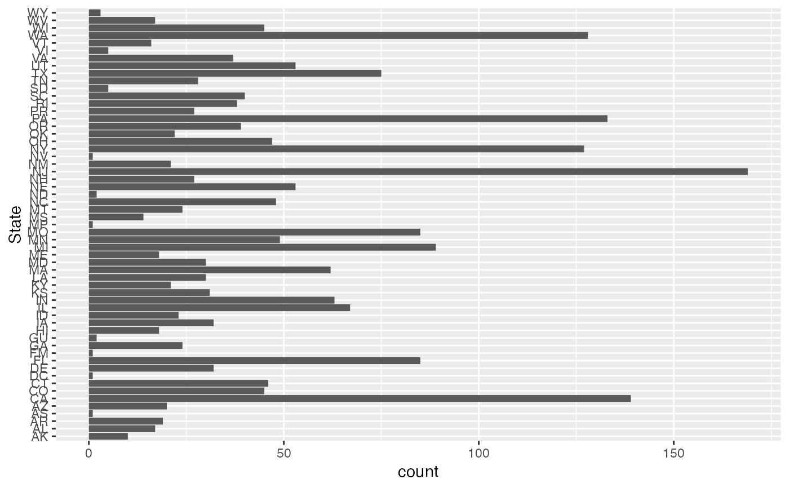

src_epa_superfund_data.Rdsrc_epa_superfund_data() returns a dataframe of Superfund sites from the Envirofacts API.
src_epa_superfund_data()A data frame (data.frame) containing data pulled from the Envirofacts API.
The Envirofacts Multisystem Search integrates information from a variety of databases and includes latitude and longitude information. Each of these databases contains information about facilities that are required to report activity to a state or federal system.
Other data accessors:
src_acr_lung_cancer_screening_data(),
src_bls_unemployment_data(),
src_brfss()
# example code
sf = src_epa_superfund_data()
#> INFO [20:49:38.211] Starting epa_superfund_data
#> INFO [20:49:43.473] Completing epa_superfund_data
dim(sf)
#> [1] 2305 8
if(requireNamespace('ggplot2')) {
ggplot2::ggplot(sf, ggplot2::aes(x=State)) +
ggplot2::geom_bar() +
ggplot2::coord_flip()
}

sf_ky = sf |> dplyr::filter(State=='KY')
dim(sf_ky)
#> [1] 21 8
colnames(sf)
#> [1] "Type" "Name" "Address" "State" "Phone_number"
#> [6] "Notes" "latitude" "longitude"
dplyr::glimpse(sf)
#> Rows: 2,305
#> Columns: 8
#> $ Type <chr> "Superfund Site", "Superfund Site", "Superfund Site", "Su…
#> $ Name <chr> "REYNOLDS ALUMINUM BUILDING PROD COMPANY", "LORI CORPORAT…
#> $ Address <chr> "347 LONGBROOK AVENUE, STRATFORD, CT 06497", "OLD TURNPIK…
#> $ State <chr> "CT", "CT", "CT", "CT", "CT", "CT", "CT", "CT", "CT", "CT…
#> $ Phone_number <chr> "", "", "", "", "", "", "", "", "", "", "", "", "", "", "…
#> $ Notes <chr> "Site is Part of NPL Site", "Site is Part of NPL Site", "…
#> $ latitude <chr> "41.2", "41.598333", "41.940561", "+41.190000", "41.60055…
#> $ longitude <chr> "-73.133333", "-72.870000", "-71.966939", "-73.120000", "…